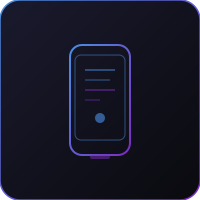

تطبيقات أصلية لنظامي iOS وAndroid تربطك بالعملاء من خلال تجارب جوال حديثة.
تطور BTS تطبيقات جوال لنظامي iOS وAndroid تساعد الشركات على التواصل مع العملاء والموظفين والشركاء من خلال تجارب جوال حديثة. نبني تطبيقات سريعة وسهلة الاستخدام وآمنة ومصممة حول أهداف العمل الحقيقية.
سواء كان التطبيق للعملاء أو الفرق الداخلية أو الحجز أو التقارير أو العمليات أو توصيل الخدمات، تساعد BTS في تحويل الأفكار إلى منتجات جوال موثوقة. من الفكرة إلى إرسال التطبيق إلى المتجر، نرشدك خلال عملية التطوير بأكملها.
الشركات التي ترغب في الوصول إلى العملاء على أجهزة الجوال أو توفير أدوات جوال لفرقها.
تساعد BTS الشركات على تحويل أفكار التطبيقات إلى منتجات جوال موثوقة وسهلة الاستخدام.
← العودة إلى الرئيسية ابدأ مشروعك ←